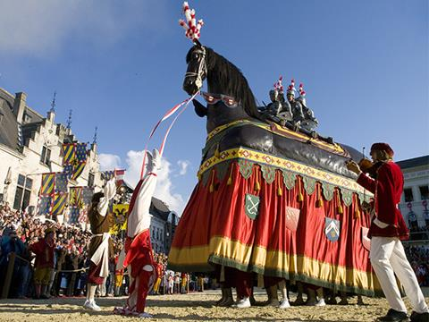
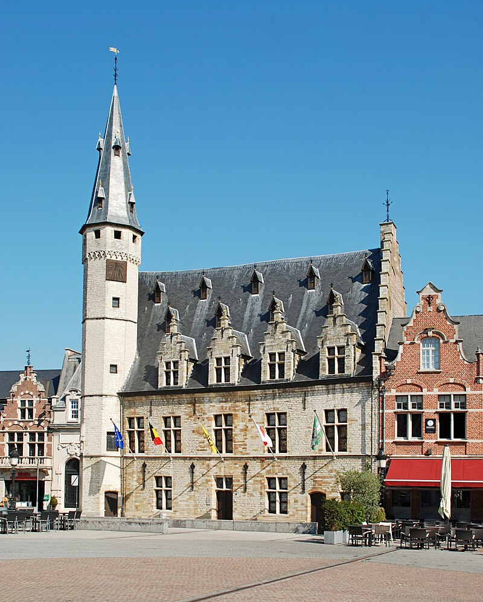

Bezienswaardigheden
't Ros Beiaard
De Ros Beiaardommegang staat op de Unesco-lijst van Immaterieel Erfgoed van de Mensheid. Het Ros Beiaard wordt voorafgegaan door een middeleeuwse ommegang met bijna 2 000 figuranten en een 20-tal praalwagens die scènes uit de stadsgeschiedenis en het Ros Beiaardverhaal vertellen. Je vindt het legendarische paard in de harten en hoofden van elke Dendermondenaar.
Vleeshuismuseum
Ontdek de geschiedenis en legenden van Dendermonde. Op de zolder van het middeleeuwse gebouw woont de oudste inwoner van de stad: een ongeveer 30 000 jaar oude mammoet uit de ijstijd. Maar het Vleeshuis heeft nog andere vreemde snuiters in de aanbieding. Ken je bijvoorbeeld de knaptanden? Benieuwd naar de kemel of het paard zonder staart? Of dwaal je liever langs mooie spelden uit de bronstijd, Romeinse vazen en middeleeuwse vondsten uit de Schelde? Breng het museum dan zeker een bezoek.
